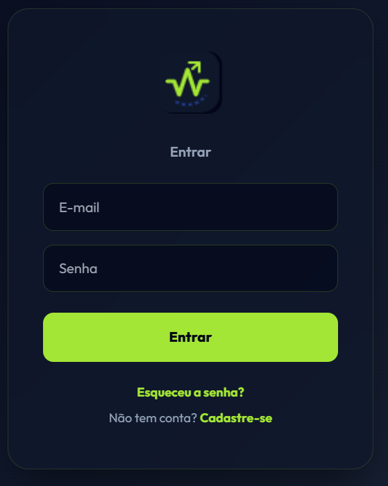

Monitoramento avançado de carga, gestão inteligente de transição e prevenção de lesões em uma única plataforma intuitiva.

Nossa plataforma foi desenvolvida pensando nas necessidades reais de comissões técnicas e departamentos de performance.
Cadastre atletas, acompanhe status, posições e dados biométricos em tempo real. Uma base de dados ativa e inteligente.
Registre e compare distância total, acelerações, desacelerações e velocidade máxima com as referências individuais e da categoria.
Monitore ocorrências, lesões e queixas. Acompanhe a evolução diária dos atletas em fase de transição (RTP).
Dashboards interativos com gráficos de distribuição e análises proporcionais para tomada de decisão baseada em dados.
Acompanhe passo a passo o retorno do atleta ao jogo. O Optimal RTP oferece uma visão clara e objetiva de quais atletas estão em transição, há quantos dias estão no departamento e a fase atual.
Nossa plataforma guia sua equipe médica através de um processo estruturado e seguro de retorno. Cada fase possui checklists de critérios baseados em evidências para garantir que o atleta avance apenas quando estiver pronto, de acordo com o protocolo Return to Play.
Mantenha o controle rigoroso da carga crônica e aguda (A:C Ratio). Planeje treinamentos semanais e verifique as métricas de GPS diretamente no perfil do atleta em recuperação.
O Optimal RTP permite a configuração institucional completa. Adapte o sistema com a sua identidade visual: configure sua logo, cor primária, cor secundária e até mesmo as cores representativas de cada fase do processo de transição (RTP).
Quero Conhecer